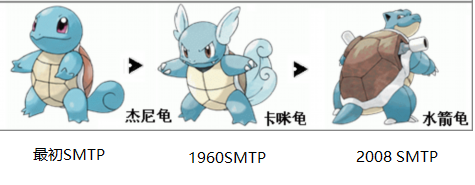
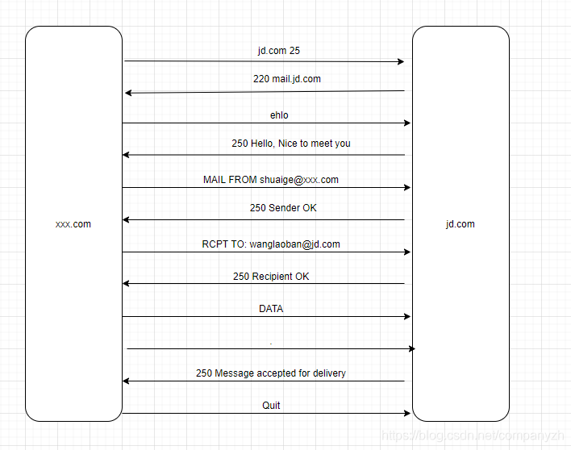

- 01 我应该站在谁的肩膀上 - OSI vs TCPIP模型.md.html
- 02 万丈高楼平地起- 物理层 + 数据链路层.md.html
- 03 OSI的灵魂就是我 - 网络层.md.html
- 04 要快还是要稳你说好了 - 传输层.md.html
- 05 是时候展现真正的技术了 - 应用层.md.html
- 06 重回小学课堂 - 二进制101.md.html
- 07 1+1 = 2吗？ - 二进制的计算.md.html
- 08 16进制又是个什么鬼？ - 16进制的讲解.md.html
- 09 我想有个家 - 什么是IP地址.md.html
- 10 我可是住二环的人 - IP地址的组成和分类.md.html
- 11 我已经没地方住了吗 - IPv6.md.html
- 12 向左还是向右 - IP路由.md.html
- 13 我能给你安全感 - TCP（一）.md.html
- 14 我那不为人知的秘密是什么 - TCP（二）.md.html
- 15 不问收没收到，就问快不快 - UDP.md.html
- 16 我为什么与众不同 - TCP高级篇（拥塞模型）.md.html
- 17 来，先看看我的家谱 - HTTP的身世.md.html
- 18 我都这么成功了，你却说我不行 - HTTP 的特点和缺点.md.html
- 19 我老了，让我儿子来吧 - HTTP2.md.html
- 20 稳重的大外甥 - HTTPS.md.html
- 21 HTTP的高级篇 - HTTPClient（Java）.md.html
- 22 想来我家，你自己查呀 - DNS.md.html
- 23 来的早，不如来得巧 - NAT.md.html
- 24 辛苦的邮政 - SMTP.md.html
- 25 你就是看不见我 - VPN.md.html
- 26 黑客的好帮手 - SSH.md.html
- 27 你可以得到我的心，却得不到我的人 - 物理安全设备.md.html
- 28 你怎么证明你就是你 - 身份验证和访问控制.md.html
- 29 我要怎么藏好我的考研资料 - 网络攻击（一）.md.html
- 30 我要怎么藏好我的考研资料 - 网络攻击（二）.md.html
- 31 如何保护我的考研资料 - 网络攻击防范.md.html
- 32 Linux网络安全 - 安全实战.md.html
- 33 结语.md.html
24 辛苦的邮政 - SMTP
什么是通信？
什么是通信？这个可能是一个比较文绉绉的词，说白了就是计算机之间的交流，唠嗑。我们从出生开始就一直在唠嗑。所以你应该对这个词不陌生。你细想一下，你唠嗑是为了啥，是不是在交流我们的需求。而且唠嗑也是我们用来了解某人的方法，比如你看上了一位美女，你直接要微信是不是比较鲁莽，除非你和老师一样帅（开玩笑）。
你是不是应该先去聊聊天，唠唠嗑，然后再要微信。在微信上可以继续的聊天，交流你们之间的感受。因此，交流是将我们的想法与其他人联系起来的机制。
好，现在不要想小姐姐了，想想比较实际的。思考一下每天与你们交流的所有人。和工作中的同事你们会交流什么？是不是会包含项目的进展，项目取得了哪些成功？潜在的困难是什么？回到家中，你还会与朋友和家人就生活中发生的事情进行交流，可能是重要的事，也可能只是一个有趣的事情，也可能是令人兴奋的事情。现在微信比较流行了，但是使用电话也是一种很好的交流方式。你可以给你的朋友打电话。或者是给你刚认识的小姐姐打电话，你先介绍你自己，让这个美女知道他正在和刚才认识的那个帅哥说话。然后你可能会说，嘿，听说市中心有一家新的咖啡店开业？你要不要尝试一下？然后你是不是就和小姐姐有了一次潜在约会的机会。当然这里不是教你怎么约小姐姐，就像电话可以帮助我们交流和交换思想一样，互联网也是一种交流机制（这个才是我们的主题，虽然刚才讲的东西可能才是你最关心的，现在把思想收一下，回到主题上来）。它在我们的生活中发挥着巨大作用，也真真切切的影响着我们如今的沟通方式。只要考虑一下你每天使用Internet在计算机上完成的所有工作即可。你可以创建文档和PPT来更新你的项目进度，并与同事共享该信息。你可以浏览互联网以阅读自己喜欢的小说。看自己喜欢的小电影。阅读有关电视节目的信息（比如巡回检察组，我之前天天追剧到不行），查看电影放映时间好约小姐姐一起，阅读或查找餐厅评论（去哪里约小姐姐），还可以使用互联网购物。你细想一下所有这些活动都可以通过使用协议来实现。协议是你的计算机用于与包含我们要使用的所有信息的其他网络进行对话的机制。
SMTP的历史
在1960年代的计算机初期，人们不得不使用大型主机才能相互通信。下面这个老照片就是大型计算机，你能想象有一个这样的计算机在你家里吗?
我们今天拥有的小型便携式笔记本电脑，平板电脑和智能手机在那个年代是根本不存在的。大多数大型机是由大学，大型企业和政府所有的。随着越来越多的大型机变得普及，所有者也希望与其他大型机所有者建立联系。就好像单机游戏再好玩，你也会希望和别人一起玩，对不对。所以，他们需要找一个办法来进行沟通。因此，在此期间，这些人创建了许多不同的协议，并使用这些协议来允许所有这些大型机相互通信。最终，为了大家能一起玩”魔兽世界“的这个愿望，SMTP协议诞生了。
SMTP协议允许这些大型机作为邮件服务器。因为文本能够通过连接的网络从一个大型机发送到另一个大型机。有时，文本可以直接发送给收件人。但有时则要困难一些，文本必须通过几个大型机才能到达目的地。因此，随着越来越多的大型机连接到网络，要传送的文本到达其目的地变得越来越复杂。 SMTP作为一个协议，可用于在使用大型机的人员之间传输这些文本。随着SMTP协议在其早期的发展，它已经进化了很多，正因如此，它也广泛的应用了。 SMTP协议运行得非常好，最终在1982年8月成为电子邮件通信的全球标准。在1982年，创建了RFC 821（RFC 821就是提供了有关什么是SMTP以及其如何工作的说明手册）。多年来，SMTP协议还在不断的完善自己，它在2008年10月又对自己进行了更新（RFC 5321）

SMTP是什么？
好，了解了SMTP的历史，就好像你看了SMTP的出生证一样，知道他是什么时候出生的，那我们来认真的了解一下这位好少年，看看他究竟优秀在哪？SMTP是一个用户用于发送电子邮件时使用的协议。该协议对应的端口是25，这是所有电子邮件系统都知道的标准，那标准是哪来的呢？当然是因为我们上面提到的RFC 821和5321。
SMTP协议会在你和小伙伴使用的电子邮件系统之间创建连接或管道。就像当你看到小姐姐时，你会说，嘿，美女，你好。然后，这个小姐姐会回头看你说，嘿，你好，帅哥。这个回头其实也就是我们说的ACK（确认）。这个ACK就打开了你们俩之间的沟通渠道，使你们可以进行对话。你可能会说小姐姐你眼睛真漂亮，小姐姐会笑一下然后说是不是想加微信？这种我们日常每天都进行的来来回回也发生在邮件系统中。你可能说中文，我和同事说英文，那邮件系统呢？使用的是SMTP协议作为其语言。 SMTP协议允许在邮件服务器之间发送一堆基于文本的命令。这些命令会建立连接并允许会话的确认也就是ACK。我听到你了，你还挺可爱的，这种对话是你向别人发送电子邮件的基本机制。
现在，我们举个例子，比如你要给你的金主爸爸（王老板）发送电子邮件。当你想向王老板发送电子邮件时，你的电子邮件客户端（比如我们熟悉的Microsoft Outlook）会将消息发送到电子邮件服务器。然后，此服务器与王老板使用的另一个邮件服务器建立连接。每当你发送电子邮件时，都会发生一系列特定的事件。首先，你的SMTP客户端或Outlook将联系你的SMTP服务器，以便它可以建立与王老板的SMTP服务器的连接。但是，为了建立此会话，我需要找到王老板的SMTP服务器所在的位置。如何到达那里呢？你想一下？是不是要使用DNS。具体来说，你的电子邮件服务器将向DNS询问王老板的域名的邮件交换记录。假设这个金主爸爸是京东的。那你就要去询问JD.COM的记录。然后，DNS服务器将使用该MX记录答复我们的邮件服务器，该记录将提供王老板的SMTP服务器的IP地址。该IP地址是王老板的SMTP服务器所在的Internet上的虚拟地址。
SMTP具体的工作流程
我们来分解一下SMTP对话的实际工作流程。首先，电子邮件服务器需要通过查询DNS来查找金主爸爸的SMTP服务器的MX记录。一旦获得，邮件服务器将通过端口25尝试建立与jd.com的连接。一旦建立了到jd服务器的连接，jd的服务器就会通过确认（ACK）响应你的邮件服务器。通常，此确认采用SMTP服务器的完全限定域名的形式(220 mail.jd.com)。然后，你的邮件服务器将发送一个ehlo命令。 金主爸爸的SMTP服务器将对此进行确认（ACK）并打个招呼。然后，从命令发送邮件，该命令提供了你的电子邮件地址（MAIL FROM [email protected]）。接着，jd的服务器将对此进行确认，并指示可以继续进行对话。已经在监听了。然后，你的SMTP客户端将发送一个收件人命令（RCPT [email protected]）。此时，金主爸爸的服务器以250 OK(250 Recipient OK)的响应ACK。现在，你的SMTP服务器希望了解邮件的内容，因此服务器发送了DATA命令。一旦发送了DATA命令，构成正文消息的每一行文本都会被发送到王老板那。为了向王老板的服务器发出已完成该消息的信号，我已经说了我需要说的所有内容，我按回车键换了一个新行，然后输入一个句号，然后再换回另一行。因此，新行，句号，新行。这个就是暗号了。然后，金主爸爸的SMTP服务器回复我的SMTP服务器（250 Message accepted for delivery），让你知道他已经知道了一切。他会传达你的信息。至此，完成了邮件的传递。你的SMTP服务器发送了Quit命令，从而结束了对话。或者，你可以将其视为挂断电话。我画一下图就是这样

Microsoft Exchange
我们现在来看一个具体的例子呀。outook大家应该都不陌生。那我们就以Microsoft Exchange为例。Microsoft Exchange，简单地说，它是一种服务器端允许客户传递消息的产品。你可以使用Microsoft Exchange发送和接收电子邮件。实际上你可能已经是Exchange的忠实客户，每天都在使用Exchange，甚至可能没有意识到。
假如正坐在办公桌旁工作，并且收到Microsoft Outlook中一位同事的电子邮件，要求你提供有关你正在一起工作的项目的信息。使用Outlook，你可以回复邮件，在午餐期间，你可以继续使用手机与同事回复邮件（不要问我为什么你们不能当面谈，也许你同事是一个漂亮的小姐姐）。但是，整天你都无法获得所需的答案，于是你终于鼓足勇气，安排一次面对面的会议。你创建了一个会议请求，并将你的同事添加到该请求中，你找到了适合双方的时间，然后发送会议邀请。在几分钟之内，你会收到一封电子邮件通知，告知小姐姐已接受你的会议请求。这一切听起来熟悉吗（我们在美国的工作流程是这样的哦）？如果是这样，则你可能正在使用Microsoft Exchange的多个功能。
Microsoft Exchange Server是世界上最受欢迎和功能最强大的邮件服务器之一。普遍用于已经使用Active Directory（如果你做过windows运维的话，你会知道，如果不知道也没关系）架构的企业。你是否用过称为Outlook的Microsoft Office应用程序？Exchange就是支撑Microsoft Outlook这个强大功能软件的背后的那个男人。你可以将电子邮件，日历和联系人通过Microsoft Outlook发送到电脑上，智能手机上，也可以从Web浏览器访问这些项目（如果你做过相关的开发，你就会发现这是一个很复杂的东西）。所以，使用Microsoft Exchange的公司的员工可以从世界任何地方访问他们的电子邮件。无论他们在办公室还是在旅途中，他们都可以进行交流（比如说我可以回中国工作的时候，仍然访问我的邮件）你可以在受支持的Windows服务器版本上安装Exchange，该版本通常位于Active Directory服务器所在的公司数据中心中。
Active Directory
Active Directory是Exchange基础结构中的重要组成部分，你可以使用两个关键工具来管理Exchange环境，这两个工具是基于Web的Exchange Admin Center和使用PowerShell的Exchange Management。 Exchange采用简化的方法来实现高可用性，这意味着降低了实现高可用所需的复杂性。 Exchange与Active Directory紧密结合。没有Active Directory，Exchange甚至无法运行。Exchange使用Active Directory将帐户与邮箱相关联，就像你用来登录工作PC的帐户一样。它使用Active Directory站点来确定将邮件路由到其他Exchange服务器的最佳方法。 Exchange软件使用许多不同的协议来实现传递电子邮件的功能。诸如HTTP和HTTPS之类的协议用于Web服务。 LDAP用于身份验证。然后是几种不同的客户端连接协议，例如POP和IMAP和SMTP。作为Exchange的核心，数据库技术提供了中央存储，可以为用户发送和接收电子邮件进行存储。该数据库还可以在数据库中跟踪会议和其他与日历相关的任务。微软早在1996年就一直公开发行Exchange的第一个品牌版本。这说明Exchange是一款非常成熟且可靠的软件。如果你使用Exchange为用户提供邮件服务，那么只要你设置正确且配置正确，应该不会出现任何的环境问题。
基本上你不做运维的话。你不太会用到powershell，Active Directory等等。我也不知道我是幸运还是不幸运曾经使用过一段Powershell和Active Directory。这也算是一段经历吧。